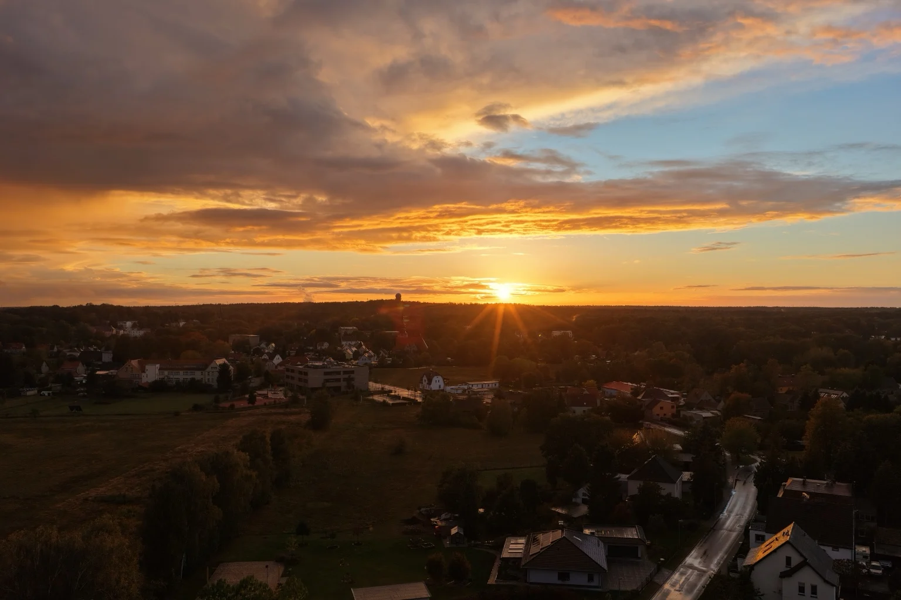
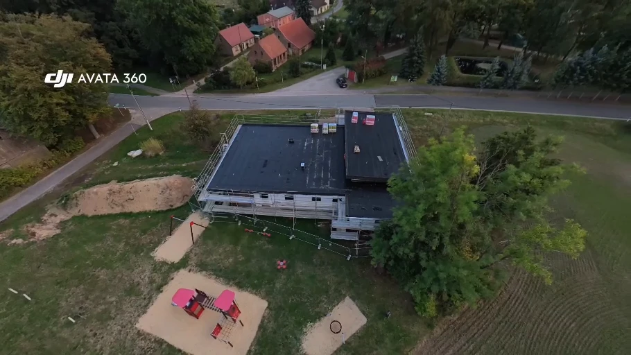
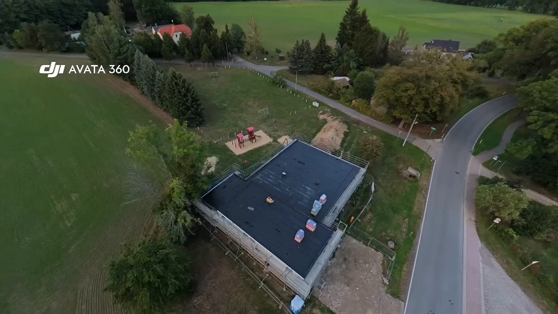
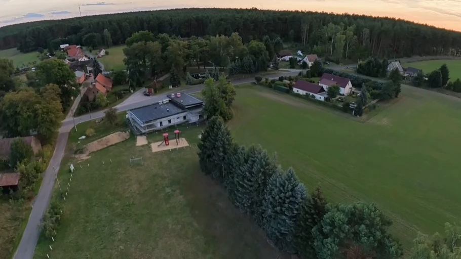
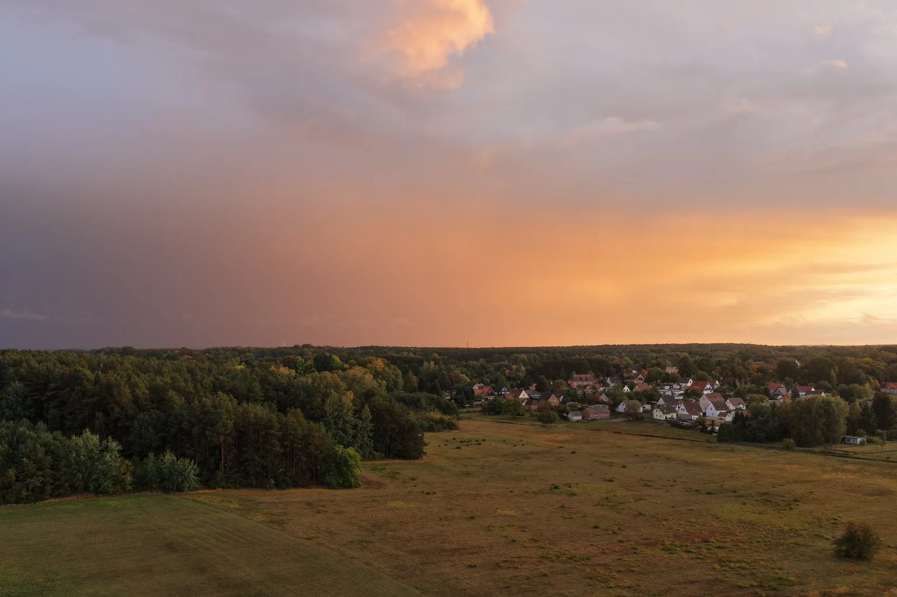
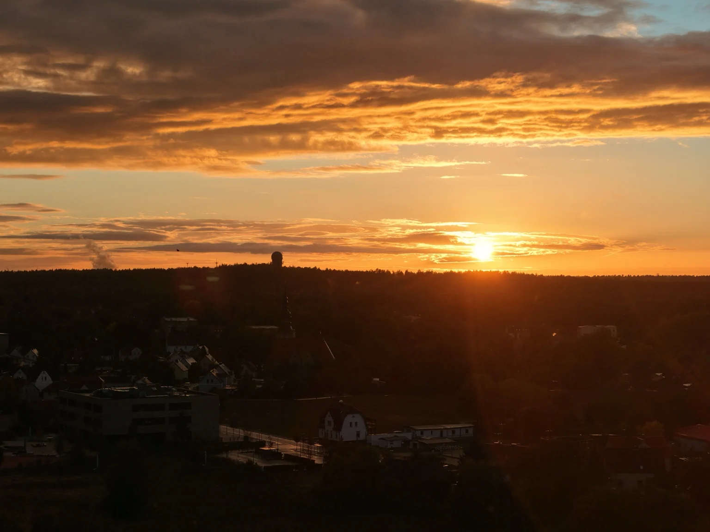

EIGENE LUFTAUFNAHME
Goldene Stunde
Eine Ortschaft, umgeben von Wald und Wiesen, im Licht der untergehenden Sonne.
Bild groß ansehen ↗Wälder, Wiesen und besondere Lichtmomente: eigene Luftaufnahmen aus der Lausitz und Einblicke in die Dokumentation eines Bauvorhabens.
Ein Gebäude aus verschiedenen Blickwinkeln: Dachfläche, Baukörper und Umgebung werden aus der Luft im Zusammenhang sichtbar.

Blick auf Dachfläche, Gerüst und Außenbereiche des Feuerwehrhauses im Bau.

Der Baukörper und die angrenzenden Flächen aus einer zweiten Perspektive.

Eine weitere Ansicht zeigt das Feuerwehrhaus und seine Umgebung.
Die Bilder wurden aus eigenen Drohnenvideos entnommen. Sie zeigen unterschiedliche Ansichten des Objekts, keine zeitliche Abfolge verschiedener Bauphasen.

Eine Ortschaft, umgeben von Wald und Wiesen, im Licht der untergehenden Sonne.
Bild groß ansehen ↗
Ein Regenbogen über herbstlichen Wäldern und den Häusern am Ortsrand.
Bild groß ansehen ↗
Wiesen, Wälder und Häuser unter einem farbigen Abendhimmel.
Bild groß ansehen ↗
Die tief stehende Sonne taucht den Horizont in warmes Licht.
Bild groß ansehen ↗Von der ersten Idee bis zur passenden Aufnahme.